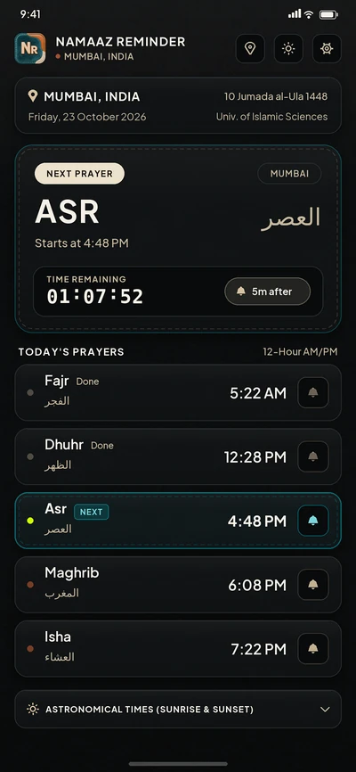
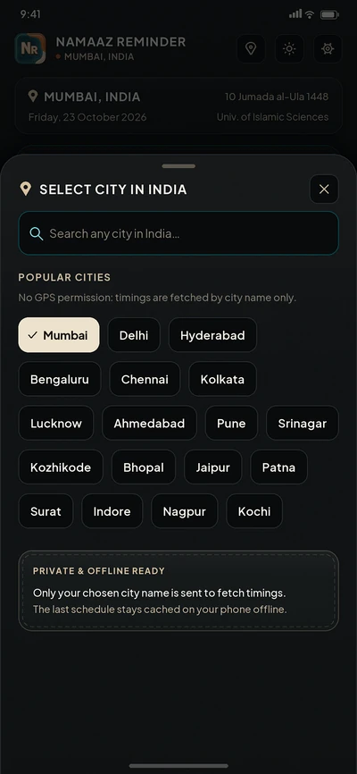
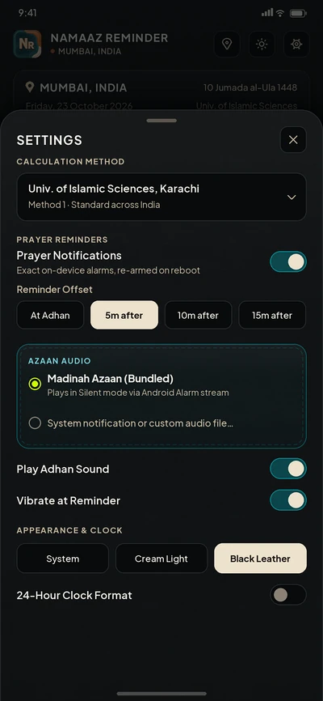

A quiet glance at the day
01 · Prayer
Namaaz Reminder
Prayer times for India
Daily prayer times for your city, a live countdown to the next salah, and optional adhan reminders. Your schedule stays ready offline.